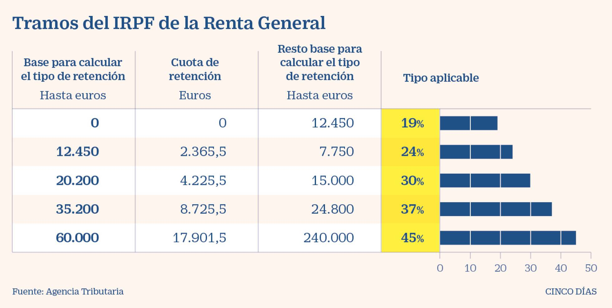
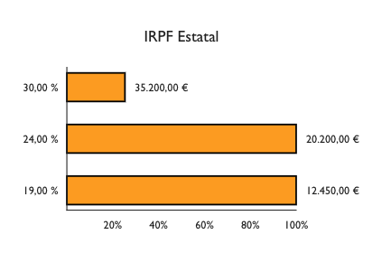
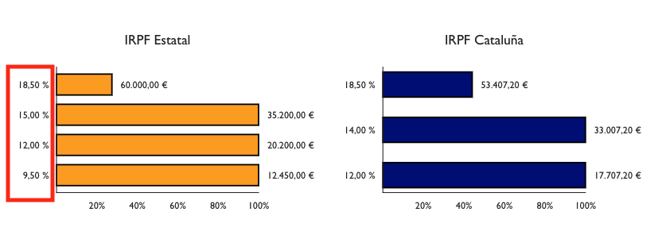

Calculadora de sueldo neto
Imagina que tienes una oferta de trabajo, un nuevo sueldo bruto anual que suena tentador, pero ¿Cúal es el neto mensual? ¿Cuál es la subida? Imagina que puedes comparar tu sueldo actual con el futuro simplemente arrastrando un slider, te traigo la solución:
Si eres como yo, para calcular el sueldo neto a partir del bruto recurrías al primer resultado de Google. Sin parar de hacer scroll arriba y abajo, refrescando la página que por cierto, es poco usable desde el móvil.
Y si querías hilar fino, te creas un Excel con la típica tabla de tramos y te lo calculas manual:

¿Ya está, no? Pues no no…para calcular bien el sueldo neto de verdad hay muchos más detalles a tener en cuenta.
Un día quise derrotar ese dragón y entender lo mejor posible como se calcula. Mientras investigaba he ido desarrollando esta calculadora de sueldo neto para validar lo que iba aprendiendo. Le faltan muchos casos y la UX es abominable pero he priorizado que sea cómodo de usar y soy nefasto haciendo UX. Agárrate que vienen curvas.
Conocimientos básicos primero
Hay un especie de leyenda urbana que dice: “Si te suben el sueldo y cambias de tramo puedes acabar cobrando menos”. La he escuchado varias veces y explica muy bien que poca educación financiera hay en las escuelas, supongo que es más importante aprender que una persona separó los mares y multiplicó los panes…bueno, que me lío.
NO.
Es imposible que una subida de tu sueldo implique ganar menos en neto. Los tramos son acumulables. Ejemplo, imaginemos que Paco cobra 24.000 cucas brutas al año:

Los primeros 12.450€ tienen 19% de retención. Lo que va entre 12.450€ y 20.200€, es decir, los siguientes 7.750 machacantes tienen el 24% de retención. Finalmente, la diferencia entre 24.000€ y 20.200€ => 3.800€ le retienen el 30%.
Siempre la primera parte del salario va a tener un retención mas baja y sube progresivamente en cada tramo. He intentado mostrar esto mediante gráficos en la calculadora, pruébala.
IRPF Estatal y Autónomico
Las calculadoras online normalmente solo te muestran unos tramos de IRPF. Esos tramos son los estatales y aplican a todos excepto vascos y navarros. Lo que no solemos tener en cuenta es que cada autonomía tiene sus tramos, y en TODAS son diferentes.

La tabla Estatal típica solo aplica a españoles no residentes, si resides en territorio español, se usa la tabla de tu comunidad y la estatal (con la mitad del porcentaje en cada tramo). Siguiendo el ejemplo de Paco, tendríamos el siguiente IRPF:
- Estatal - 1.626,90€
- Autonómico - 1.846,49€
- Total - 3.473,39€ (14,47%)
Si estas haciendo los cálculos por tu lado y no te cuadran los números es normal, mira el siguiente punto.
Deducciones y gastos
Primero de todo, hay un mínimo de gastos de 2.000€, todos los calculos deben hacerse restando incialmente este valor del bruto, en el caso de Paquito 22.000€ es la cifra con la que se empieza a calcular el IPRF.
Posiblemente te suene la cifra 5.550€. Es el mínimo deducible. El caso más común persona soltera sin hijos etc. tiene ese mínimo deducible. Para deducirlo se aplican los tramos también. Es decir, para saber cuanto nos podemos deducir si vivimos en Cataluña tenemos que aplicar los tramos del estado y de la autonomía a la cifra a deducir. Ejemplo:
5.550€ está tanto en el primer tramo del Estado (hasta 12.450€) como de Cataluña (hasta 17.707,02€), por lo tanto se aplica el tipo del primer tramo:
- Estado 9,5% - 527,25€
- Cataluña 12% - 666,00€
A los impuestos totales del estado se les resta la deducción calculada, igual con la autonomía.
Este es el caso estándar, las deducciones aumentan por cada hijo, por cada ancestro dependiente, etc. He recogido algunos de estos casos en la calculadora de sueldo neto, pero me quedan varios por añadir.
Imaginemos que Paco tiene gemelos, 2 hijos de menores de 3 años. Pues las deducciones aumentan hasta quedar:
- Estado 4,66% - 1035,50€
- Cataluña 5,2% - 1308,0€
El sueldo neto mensual con 12 pagas resultante es 1679,4€, que comparado con el sueldo sin hijos (1583,55€) resulta en casi 100€ más al mes por tener dos hijos menores de 3 años, no se si llega para los pañales.
Seguridad Social
Una vez tienes el IRPF puedes pensar que ya lo tienes para calcular el neto, craso error. También cotizas a la seguridad social y eso también se quita del bruto. Esto debería ser facil, es el 6,35% pero con un matiz, hay un mínimo y un máximo. El máximo se alcanza con 48.841€ brutos anuales, todos los sueldos a partir de ahí pagan lo mismo. El mínimo* es 12.600€ brutos anuales.
A Paco le queda un pago a Seguridad Social de 1.524,00€
La fórmula 
A grandes rasgos la fórmula es la siguiente:
Salario neto = salario bruto - IRPF Estatal - IRPF Autonomico - Seguridad Social
Con los matices ya comentados:
- Los gastos y las deducciones modifican el IRPF final.
- Hay mínimo y máximo de Seguridad Social.
Espero haber aclarado un poco como funciona este cálculo, es importanto conocer esta información, la pela es la pela.
Siguientes pasos
- Añadir los deducciones que faltan.
- Añadir tickets restaurant, guardería, etc. como cotizan.
- Mejorar la UX.